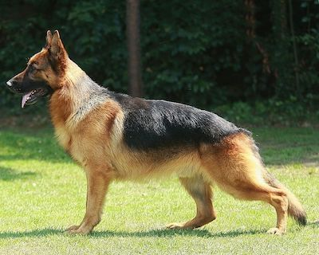

El pastor alemán es un perro juguetón, sociable e inteligente que se ha ganado el corazón de la mayoría de las personas. Posee un carácter equilibrado, no es dependiente de su dueño pero sí le muestra fidelidad.
Esta raza canina es originaria de Alemania, aunque con los años ha ido esparciéndose por el mundo entero. Podemos encontrar diversas variantes de pastores alemanes, aunque los únicos que están reconocidos oficialmente por la Federación Cinológica Internacional (FCI) son los de pelo largo y pelo corto.
